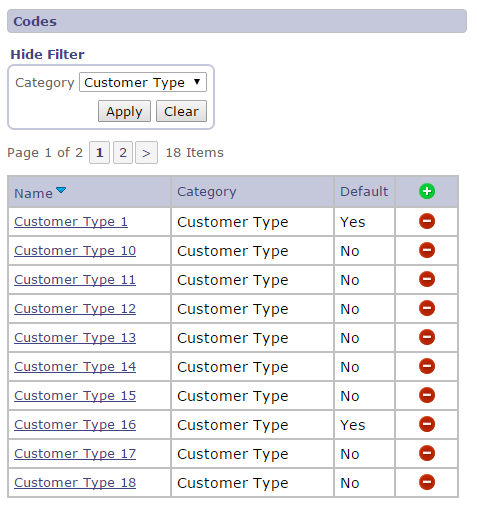
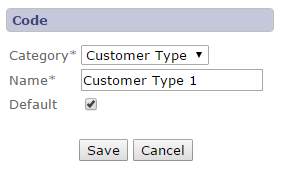
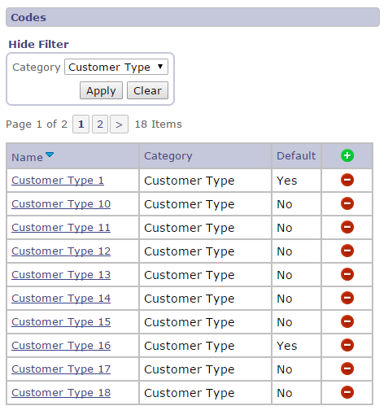
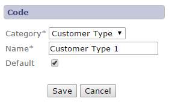

Codes Module
The codes module provides support for including application specific lookup codes in a custom application. The module is built
upon the core framework and consists of a code management interface for managing codes values based on application specific
code categories and user interface components supporting the display and selection of code values within an application. The following
sections document the code management interface and user interface components.
Code Management Interface
This view allows a user to view, add, edit and delete category specific lookup codes.

This view allows a user to add or edit a category specific lookup code. Definitions of each field are listed below the screen shot.


This view allows a user to add or edit a category specific lookup code. Definitions of each field are listed below the screen shot.

| Field | Description |
|---|---|
| Category | Category associated with the code value. |
| Name | Code name displayed in user interface display and selection components. |
| Default | Indicates this code is the default value with the category. User interface selection components will display this code by default. |
| Save | Saves changes to the lookup code and returns to the view codes page. |
| Cancel | Ignores changes to the lookup code and returns to the view codes page. |
Code Component Interface
The code library contains four components supporting access to the lookup code values defined using the code management interface.
The components can be included in an application page using the following statement.
<%@ taglib uri="com/bws/jdistil/codes" prefix="codes" %>
The following table documents the available code components.
| Class | Reference Name | Description |
|---|---|---|
| com.bws.jdistil.codes.tag.CodeDisplayField | displayList | Displays a single read only code value. |
| com.bws.jdistil.codes.tag.CodeDisplayMultipleField | displayMultipleList | Displays multiple read only code values. |
| com.bws.jdistil.codes.tag.CodeListField | list | Displays a single select list of code values. |
| com.bws.jdistil.codes.tag.CodeListMultipleField | multipleList | Displays available and selected lists allowing selection of multiple code values. |